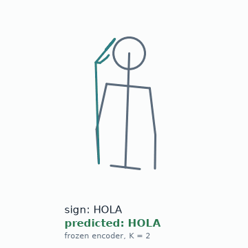
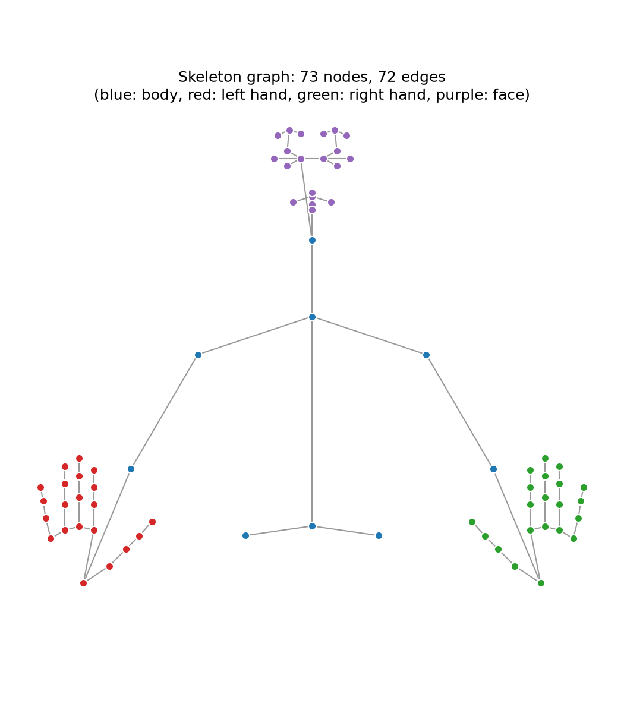
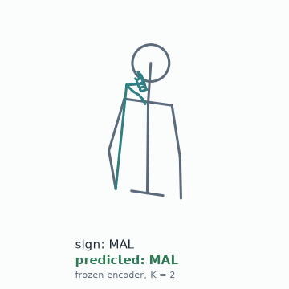
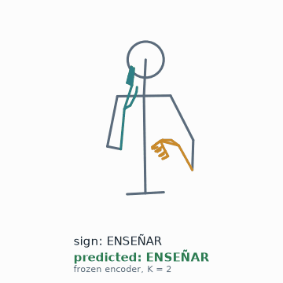
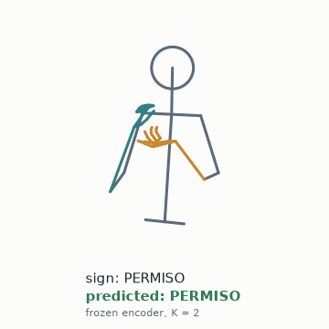
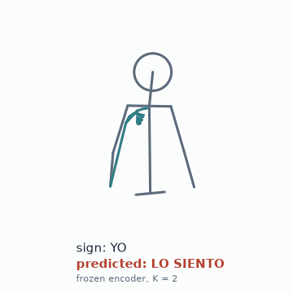
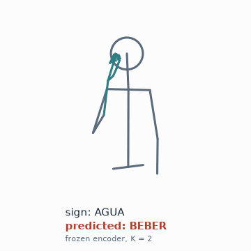
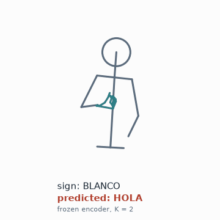
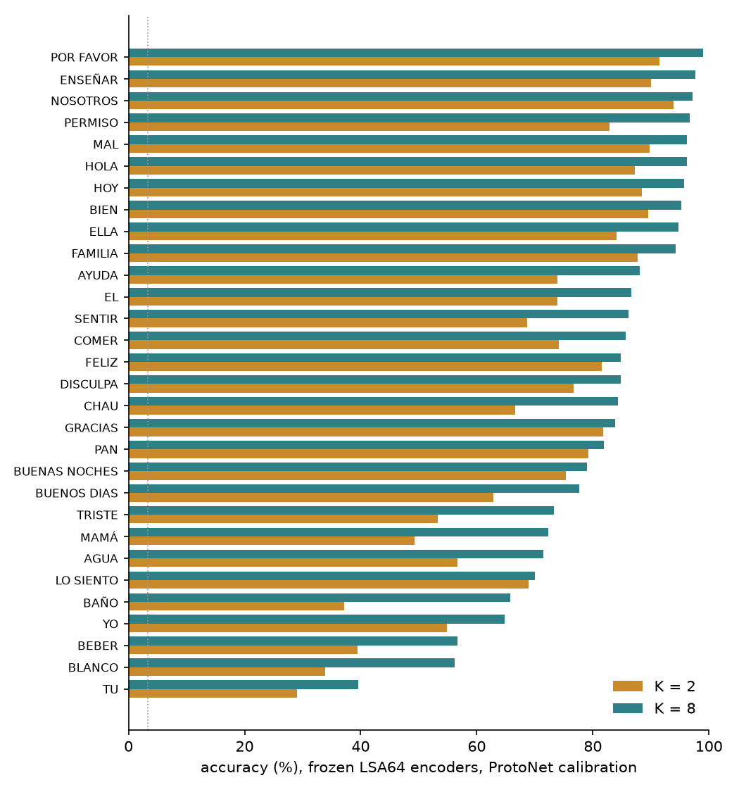

Few-Shot Peruvian Sign Language Recognition with Hand-Aware Graph Networks
Universidad Nacional de Ingeniería (UNI), Lima, Peru

Abstract
Few certified interpreters and almost no automatic tools are available to the Peruvian Deaf community, which limits its access to healthcare, education and public services. We study isolated sign recognition for Peruvian Sign Language (LSP) from MediaPipe Holistic keypoints, with a focus on adapting to new signers from a few examples. An encoder meta-trained with Prototypical Networks on LSA64 (Argentinian Sign Language) and then kept frozen recognizes 30 LSP signs from a signer it has never seen with 69.7 to 72.8% accuracy, calibrated with only 1 to 2 takes per sign (chance: 3.3%). On unseen LSA64 signers, the same calibration reaches 98.8 to 99.5% with 1 to 4 takes per sign. A linear head fine-tuned on the same takes matches or exceeds Prototypical calibration for 2 or more takes per sign. Trained directly on our 30-sign, two-signer LSP dataset, the encoder (HA-GCN, a hand-aware graph network) reaches 98.8% test accuracy (ST-GCN 96.3%, Bi-LSTM 72.8 to 87.7%); this split shares signers between training and test, so it does not measure generalization to new signers.
Method

Each take is 30 frames of MediaPipe Holistic keypoints, mapped to a 73-node skeleton graph (11 body, 21 + 21 hand and 20 face nodes) and normalized per take; every node carries its coordinates, its bone vector to the parent node and its frame-to-frame motion. HA-GCN alternates spatial graph convolutions over a partitioned skeleton adjacency with temporal convolutions, and adds a learnable adjacency term restricted to the hand nodes plus DropGraph regularization; at initialization it is identical to ST-GCN. For new signers, the encoder is pre-trained and then meta-trained on LSA64 with signer-disjoint episodes. At calibration time its weights stay frozen: each class prototype is the mean embedding of the K calibration takes, and a test take is assigned to the nearest prototype.
Results
Cross-lingual transfer: LSA64 to LSP, unseen signers
The HA-GCN encoders below are meta-trained on LSA64 (one per held-out LSA64 signer pair) and frozen; they are calibrated with K takes per sign of each LSP signer. No LSP data trains the encoder. Mean ± std over 30 pooled trials, in %. Chance is 3.3%.
| LSP signer | Calibration | K = 1 | K = 2 | K = 4 | K = 8 |
|---|---|---|---|---|---|
| signer_01 (3 takes/sign) | ProtoNet | 69.7 ± 2.9 | 72.8 ± 5.0 | – | – |
| signer_01 | Fine-tune-K | 68.0 ± 4.1 | 78.0 ± 5.3 | – | – |
| signer_00 (15 takes/sign) | ProtoNet | 62.6 ± 3.8 | 70.7 ± 3.6 | 77.6 ± 2.3 | 81.9 ± 2.1 |
| signer_00 | Fine-tune-K | 61.7 ± 3.3 | 72.6 ± 3.2 | 80.6 ± 1.6 | 85.8 ± 2.4 |
Fine-tune-K is a control baseline: a new linear layer trained on the frozen embeddings of the same K takes. It matches or exceeds ProtoNet for K of 2 or more, so these experiments do not show an advantage of Prototypical calibration over a simple supervised head.
Errata: the original report of this project pooled four encoders for this table, two of which were trained on the same LSA64 signer split. The values above use one encoder per split and are recomputed from the stored per-trial results; the original values are listed in the repository README.
Few-shot calibration on LSA64, unseen signers
For each of 3 seeds, 2 of the 10 LSA64 signers are held out from meta-training and used for calibration and testing. Mean ± std over 60 pooled trials, in %.
| Encoder | Calibration | K = 1 | K = 2 | K = 4 |
|---|---|---|---|---|
| ST-GCN | ProtoNet | 98.0 ± 1.2 | 99.0 ± 0.7 | 99.1 ± 1.0 |
| ST-GCN | Fine-tune-K | 97.8 ± 1.5 | 98.8 ± 0.8 | 99.3 ± 0.9 |
| HA-GCN | ProtoNet | 98.8 ± 1.0 | 99.4 ± 0.5 | 99.5 ± 0.8 |
| HA-GCN | Fine-tune-K | 98.8 ± 0.8 | 99.5 ± 0.4 | 99.6 ± 0.7 |
Supervised training on LSP, sample-level split
Both signers appear in training and test (378 / 81 / 81 takes), so this table measures how well the 30-sign vocabulary is learned, not generalization to new signers. One seed; one test error moves accuracy by about 1.2 points.
| Model | Input streams | Params | Accuracy (%) | Macro F1 (%) |
|---|---|---|---|---|
| Bi-LSTM | landmarks | 193,502 | 72.84 | 71.35 |
| Bi-LSTM | landmarks + bones + motion | 417,758 | 87.65 | 86.43 |
| ST-GCN | landmarks + bones + motion | 109,024 | 96.30 | 96.38 |
| HA-GCN | landmarks + bones + motion | 204,949 | 98.77 | 98.86 |
Qualitative results
Takes of signer_00 classified by a frozen HA-GCN encoder after calibration with 2 takes per sign (one calibration draw of the transfer experiment above). Successes are the most confident correct predictions of signs not shown in the teaser; failures are the most confident errors.
Successes



Failures



Failure analysis
We pool the ProtoNet predictions of the transfer experiment for signer_00: 3 encoders × 10 calibration draws, with the remaining takes of each sign as test (11,700 predictions at K = 2, 6,300 at K = 8). Accuracy varies strongly across signs. At K = 2 it ranges from 29% for TU and 34% for BLANCO to 94% for NOSOTROS and 92% for POR FAVOR; at K = 8 the hardest signs are still TU (40%), BLANCO (56%) and BEBER (57%).

Errors are spread over many sign pairs: at K = 2 the eight most frequent confusions account for 14% of all errors. Some pairs are confused in both directions, such as AGUA and BEBER, and YO and LO SIENTO.
| True sign | Predicted | Count (K = 2) | Share of errors |
|---|---|---|---|
| YO | LO SIENTO | 83 | 2.4% |
| BAÑO | EL | 81 | 2.4% |
| AGUA | BEBER | 67 | 2.0% |
| PAN | HOY | 55 | 1.6% |
| MAMÁ | LO SIENTO | 53 | 1.5% |
| BLANCO | MAMÁ | 51 | 1.5% |
| BEBER | AGUA | 49 | 1.4% |
| LO SIENTO | YO | 49 | 1.4% |
We have not tested why these signs are hard. Possible factors are signs performed in a similar
place near the face or chest, hand shapes that the 21 hand keypoints capture poorly, and the gap
between Argentinian training signs and Peruvian test signs. The full counts are in
results/page/signer00_failure_analysis.json.
Limitations
- LSP results rest on two signers and 30 isolated signs. One of the signers is the author, a hearing non-native signer who has been learning LSP; their productions may differ from those of native Deaf signers. Evaluating with native signers is left for future work.
- During LSA64 meta-training, the best epoch was selected on the same held-out signers that are reported, so the LSA64 numbers are optimistic. The LSP signers were never used for selection.
- The LSA64 results are close to their ceiling and are not compared with published results, so they do not discriminate well between methods.
- The supervised LSP results use one seed and a small test set (81 takes).
- Prototypical calibration does not outperform a fine-tuned linear head in the transfer setting for K of 2 or more.
- Every result depends on the detection quality of MediaPipe Holistic; missed hands are only interpolated over time.
Data & ethics
- Keypoints only. The LSP recordings store MediaPipe Holistic keypoints, not video or images. The keypoints include 20 facial landmarks, which describe facial movement and can carry identifying information, so we treat them as personal data.
- Consent. The skeleton animations on this page show only signer_00, the author, who consents to their use. Recordings of the second signer are not shown or released, pending a signed consent form.
- No faces. Animations draw the body and hands only; the face is replaced by a plain head outline.
- Release. The LSP recordings are not distributed. The repository includes split indices, per-run results and the code to record and prepare new data with consent.
- LSA64. The few-shot experiments use LSA64 (Ronchetti et al.), distributed under CC BY-NC-SA 4.0. Encoders trained on it will be released under the same license.
- Intended use. Research on sign language recognition and signer adaptation. These models are not validated for interpreting, accessibility services or any decision about people, and they must not be used to identify or track signers.
BibTeX
@techreport{salcedo2026lsp,
author = {Salcedo Alvarez, Guillermo Ronie},
title = {Reconocimiento de Lengua de Se{\~n}as Peruana mediante Redes de Grafos
Espacio-Temporales con Atenci{\'o}n a Manos y Calibraci{\'o}n Few-Shot
Multi-Usuario},
type = {Bachelor's research project},
institution = {Universidad Nacional de Ingenier{\'i}a},
address = {Lima, Peru},
year = {2026},
month = jul,
note = {In Spanish. English title: Peruvian Sign Language Recognition via
Spatio-Temporal Graph Networks with Hand Attention and Multi-User Few-Shot
Calibration},
url = {https://github.com/guisa17/lsp-stgcn-fewshot}
}
If you use the LSA64 experiments, please also cite: F. Ronchetti, F. Quiroga, C. Estrebou, L. Lanzarini and A. Rosete, "LSA64: An Argentinian Sign Language Dataset", CACIC.
Acknowledgments
This work was developed at Universidad Nacional de Ingeniería (UNI), Lima, Peru. We thank the second signer for contributing recordings to the LSP dataset, and the authors of LSA64 for making their dataset available.